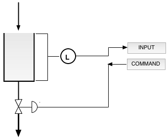

Back to Web Labs at ReactorLab.net
Level Control in Water Tank
There are three process units: a water source that empties into a tank, a
tank with a variable-flow outlet valve, and a feedback controller. The controller
controls the water level by sending a command to the valve. Each process unit
is defined as a separate Javascript object, so units can be added to a model easily.
Click the Run button to start. Hit the enter key or click out of field after changing inputs.
Set flow rate (m3/s) :
Enter reset time ( > 0 s)
Enter level setpoint (0-2 m)
Enter contoller gain